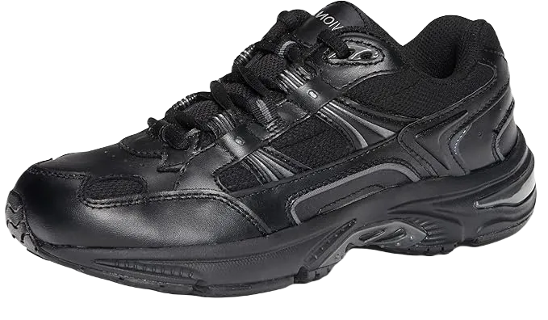

Top 4 Best Shoes for Aging Feet In 2024
Best shoes for aging feet are crucial for maintaining a good quality of life. They offer excellent comfort, prevent injuries, and help you navigate hazardous conditions such as rain and snow.
As you age, your feet also undergo changes and need extra care. Neglecting them can lead to significant problems, potentially disrupting your daily routine and making you reliant on others to move around.
-
#1
Hoka One One Bondi 7
.webp)
Hoka One, particularly the Bondi model, is regarded as one of the best shoes for aging feet due to its exceptional cushioning, even better than many Orthofeet shoes. It allows you to wear the shoe comfortably all day without putting unnecessary stress on your feet.
The shoe's upper is made from a mesh material that is highly flexible, offering a cozy feel for your feet. The midsole features EVA foam, which provides excellent cushioning and durability, while the outsole is constructed from durable, hard rubber that offers good grip and is lightweight.
Now, diving deeper into the review of this shoe: First, the mesh upper is incredibly breathable, allowing for good airflow, keeping your feet fresh and odor-free all day. It is also flexible, giving ample room for your toes to expand and rest comfortably. Secondly, the midsole is thick and has a wider base, which enhances stability and comfort. The EVA foam technology used in the midsole is highly durable, outlasting traditional rubber soles. -
#2
Altra Torin 3
.webp)
Altra Torin is a newly designed running shoe specifically engineered for patients with Morton’s Neuroma. It features the widest toe box available in any running shoe, allowing your toes to stretch fully and providing exceptional comfort for the feet.
The shoe's upper is crafted from a flexible mesh material that allows your feet to stretch comfortably. The midsole is made from a flexible foam that offers zero drop, and the outsole incorporates Altra's foot pod technology, ensuring a good grip while maintaining comfort.
In detail, the upper mesh material is highly breathable, promoting airflow to keep your feet fresh and sweat-free throughout the day. The wide toe box offers ample space for your toes to spread naturally. Additionally, the midsole is constructed with durable, comfortable foam that enhances the shoe’s longevity and performance. -
#3
Vionic walker
One of the top shoes recommended by podiatrists is the Skechers Vionic Walker. This shoe comes in a variety of colors and is considered unisex, meaning both men and women can wear it. Since it's podiatrist-approved, you can trust the quality and comfort it provides.
In terms of features and performance, this shoe has consistently impressed. The upper part is waterproof, made of leather, while the top layer incorporates breathable mesh material. This combination ensures a good fit and helps keep your feet secure, preventing slipping.
The shoe also features a wide toe box, allowing your toes to spread easily and aiding in recovery. The midsole is crafted from durable EVA foam, offering excellent comfort and long-lasting support, meeting the high standards of any podiatrist-recommended shoe. -
#4
Skecher shape ups
.webp)
Skechers Shape-Ups were once the best shoes of their time and remain popular today, especially among older individuals who value them for their exceptional comfort. They are available in only three solid colors, which are quite popular among seniors for their classic, timeless appeal.
One of the standout features of Skechers Shape-Ups is the rocker sole design, which offers excellent shock absorption. These shoes are incredibly comfortable and come with a wide toe box, making them ideal for older people who need extra room and support for their feet.
In terms of detailed features, the upper part of the shoe is made from a combination of mesh and velvet materials, which are both waterproof. This combination provides durability and comfort, making Skechers Shape-Ups a solid choice for individuals seeking reliable footwear for daily use.